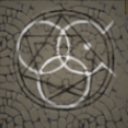
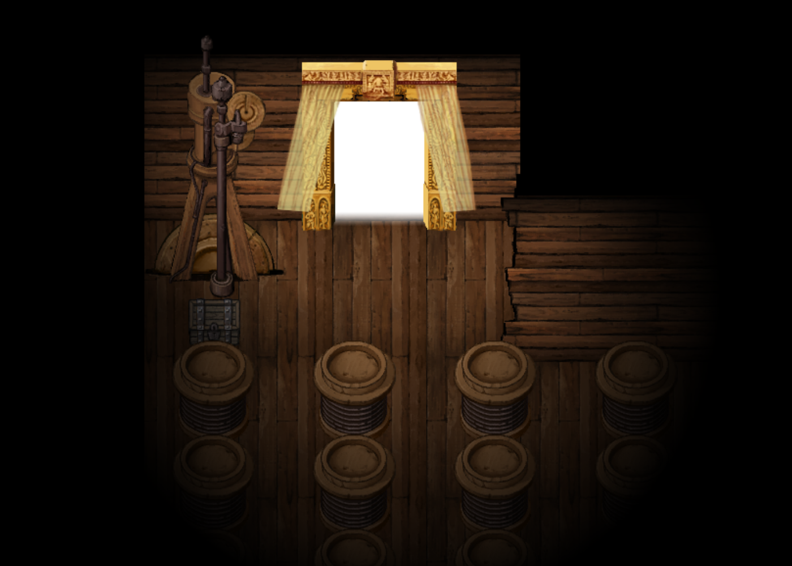

The Trickster Moon God Rher
A mysterious Old God and one of the last of the Old Gods that still observes mankind to this day. Reflecting his name and many titles, Rher encompasses the ideas of trickery, deceit, subterfuge, schemes, and all things associated with deviousness. In the lore of Rher's Skin Bible, he is portrayed as a god of the insane and a trickster of madness. This depiction aligns closely with the experiences of those afflicted by the Moon's influence, who often succumb to insanity. The act of engraving Rher's sigil onto one's face increases their Mind, granting them greater knowledge without plunging into complete madness from the "truth". However, the same tome hints at Rher's manipulation of this "truth" bestowed by moonlight, utilizing it as a trick against others questioning his motives. His Bible suggests that he also is a god that represents fallacies and false truths, particularly those perpetuated by humanity about itself.
Rher is said to be of a jealous kind, not wanting to share godhood with the mortal race of humans, alongside disapproving of them taking over the old world order and replacing it with the new world order, as humans now have become this mocking and pretentious display of being New Gods.
Gallery
-

Asymmetric circle with sigil
-

Rher's dimention
-
Rher's servant Pocketcat